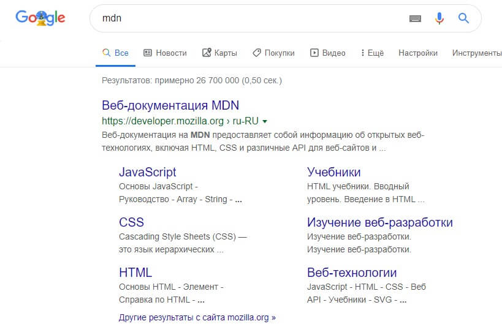

Активное изучение: как поисковые системы используют описание
Описание из <meta name="description"> используется на страницах поисковой выдачи. Проведём небольшое исследование такого сценария.
- Перейдите на главную страницу Mozilla Developer Network.
- Откройте исходный код страницы (кликните правой кнопкой мыши и выберите Просмотреть код в контекстном меню.)
- Найдите тег meta с описанием. Он выглядит так:
- Теперь найдите "Mozilla Developer Network" в своём поисковике (мы использовали Google). Обратите внимание, что описание и название из
<meta>и<title>используется в результатах поиска, — мы не зря указали их!

<meta name="description" content="Веб-документация на MDN
предоставляет собой информацию об открытых веб-технологиях,
включая HTML, CSS и различные API для веб-сайтов и
прогрессивных веб-приложений. Также на сайте содержатся материалы
для разработчиков о таких продуктах Mozilla, как Инструменты разработчика Firefox.">Примечание: Google также показывает важные страницы MDN под ссылкой на главную страницу. Такие ссылки называются sitelinks, и их можно настроить через Google Search Console, чтобы пользователи могли сразу перейти к ним со страницы поиска.
Примечание: Многие типы <meta> больше не используются. Так, поисковые системы больше не используют данные из элемента <meta type="keywords" content="ваши, ключевые, слова, введите, здесь">, в котором указывали ключевые слова, по которым можно найти страницу: спамеры засовывали туда все слова, какие могли придумать, чтобы их сайты почаще появлялись в поиске.